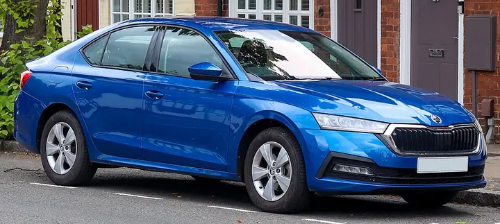
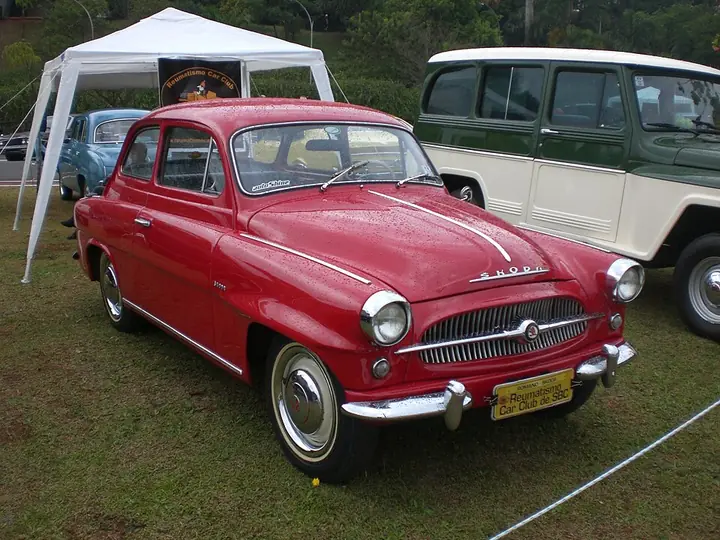

Škoda Octavia
Fourth generation (Typ NX; 2020) · 2019–present
Abstract
This generation of the Škoda Octavia was built November 2019 – present (Global) in Czech Republic: Mladá Boleslav, Russia: Nizhny Novgorod (GAZ), China: Ningbo (SAIC-VW) and other plants. Body styles: 5-door liftback, 5-door estate.


1Specifications
| Production | November 2019 – present (Global)2021–2026 (China) |
|---|---|
| Assembly | Czech Republic: Mladá BoleslavRussia: Nizhny Novgorod (GAZ)China: Ningbo (SAIC-VW)India: Aurangabad (Škoda Auto-VW) (2021–2023)Kazakhstan: Kostanay(Allur, “Prague Auto") |
| Body style | 5-door liftback5-door estate |
| Platform | Volkswagen Group MQB Evo |
| Engine | Petrol:1.0 L TSI 110 I31.4 L TSI 150 I41.5 L TSI 150 I41.6 L MPI 110 I42.0 L TSI 190 I42.0 L TSI 250 I4Petrol CNG:1.5 L TGI 130 I4Petrol PHEV:1.4 L DGEA TSI turbo I4+electric motor, 150 kW (iV)1.4 L DGEA TSI turbo I4+electric motor, 180 kW (RS iV)Petrol mild hybrid:1.0 L TSI 110 I31.5 L TSI 150 I4Petrol hybrid:1.5 L TSI I4 96 or 110 kWDiesel:2.0 L TDI 115 I42.0 L TDI 150 I42.0 L TDI 200 I4 |
| Electric motor | 85 kW Permanent magnet AC synchronous motor (iV / RS iV)125 kW Permanent magnet AC synchronous motor |
| Transmission | 6-speed manual transmission6-speed automatic transmission6/7-speed dual-clutch automatic DSG8-speed automatic Aisin AWF8F35/45Single-speed TQ250 Transmission |
| Battery | 1.6 kWh NMC (Octavia Hybrid)13 kWh Li-ion (Octavia iV PHEV) |
| Wheelbase | 2669 mm2730 mm (Octavia Pro) |
| Length | 4689 mm4753 mm (Octavia Pro) |
| Width | 1829 mm1788 mm (Octavia Pro) |
| Height | 1470 mm (liftback)1469 mm (Octavia Pro)1468 mm (estate) |
| Weight | 1226–1590 kg |
| Also called | Škoda Octavia Pro (China) |
| Related | Audi A3SEAT LeónCupra FormentorVolkswagen Golf Mk8 |
| Predecessor | Škoda Octavia Mk3Škoda Rapid (NH3) |
2Versions
- Facelift
3Previous generations



.jpg){kind=link}
4Generation by generation
Length +15% from the first to the last
Škoda Octavia 19594,065 mm
Typ 1U 19964,511 mm
Typ 1Z 20044,569 mm
Typ 5E 20124,659 mm
Typ NX 20194,689 mm
Weight −3% from the first to the last
Typ 1Z 20041,265 kg
Typ 5E 20121,150 kg
Typ NX 20191,226 kg